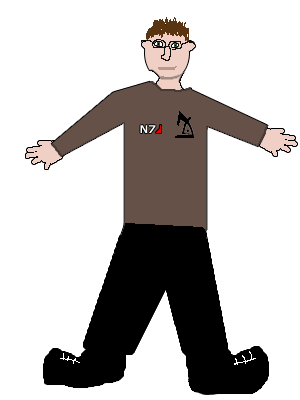

About Me and This Site.

If you are reading this and have not been blinded from that horribly drawn picture of me, because that picture scares even me, feel free to keep reading!
The goal of this website is to double as my personal portfolio and a place where I am able to practice the web development and web design techniques I am gaining through university. In the future I am also planning on transforming this site into a personal blog, although that time is still a while away.
I am currently completing a Master of Technology (Information Technology) at Swinburne University where I am finally able to learn the skills I should of learned over ten years ago. The reason why I say this is that ever since 1997 I have been associated with the internet and web design. Yes at this young age I attempted to make my first website on none other than Godzilla with frontpage express. Why Godzilla? I do not remember at all.
I had a feeling at this age that one day I would be doing this on a regular basis. As the years continue I improved my skills in Adobe Photoshop, graphic design and image editing in general. Making website layouts on a regular basis and never releasing the site due to the fact I had no skills in the development side of things.
Although finally I am learning the skills I need to be successful in this industry as well as gaining the motivation to make sure my years of experience in photoshop and graphic design were not wasted. As the months continue I will be using this as a portfolio and hopefully a platform to beta test the web applications I hope to develop, although for now it is all about learning the skills I need and ensuring that the skills I have learned progress even further.